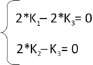

Для расстановки коэффициентов необходимо ввести уравнение химической реакции без коэффициентов в поле ввода и нажать на кнопку "GO"
Результат расстановки появится в поле "результат".
Символы химических элементов необходимо записывать в соответствии с их видом в таблице Менделеева, т.е. первая буква должна быть заглавной, а вторая строчной.
Расстановка коэффициентов основана на решении системы уравнений материального баланса. В некоторых случаях решение такой системы позволяет расставить коэффициенты двумя и более способами, несмотря на правильность введенных данных. В этом случае можно заменить неизменяемые фрагменты молекул на какой-нибудь произвольный символ.
Например, для уравнения
C6H5CH2CH3 + KMnO4 + H2SO4 = C6H5COOH + CO2 + K2SO4 + MnSO4 + H2O
можно использовать следующую запись:
PhCH2CH3 + KMnO4 + H2SO4 = PhCOOH + CO2 + K2SO4 + MnSO4 + H2O
Например, необходимо расставить коэффициенты в уравнении H2 + O2 = H2O
Обозначим неизвестные коэффициенты как K1, K2 и K3 и наложим на них разумные ограничения
Пусть K1,K2,K3 будут хотя бы положительными обыкновенными дробями
Тогда уравнение будет выглядеть следующим образом: K1 H2 + K2 O2 = K3 H2O
Запишем условие материального баланса: 2*K1 H + 2*K2 O = 2*K3 H + K3 O
Перенесем всё в одну часть и сгруппируем относительно символов H и O:
H(2*K1 - 2*K3) + O(2*K2 - K3) = 0
Это равенство будет выполняться, только если содержимое обеих скобок будет одновременно равно нулю, что эквивалентно системе:

Такая система имеет бесконечно много решений. Запишем их в общем виде:
K1 = t, K3 = t, K2 = t/2
Пусть t = 1, тогда K1 = 1, K3 = 1, K2 = 1/2
или
K1 = 2, K3 = 2, K2 = 1
Таким образом, согласно материальному балансу, уравнение реакции примет вид:
2H2 + O2 = 2H2O